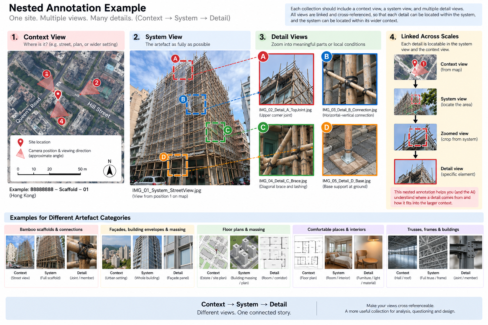

A0: Applied Exercise
1. GATHER
Build a useful visual collection.
Begin with the city rather than the AI. Each student will work with one assigned / approved artefact category, building a small collection of real examples from around Hong Kong. Document them carefully enough that someone else can understand both the whole system and the details that make it up.
The aim is not simply to collect many photographs. Your collection should provide structured visual evidence that can later be compared, cross-referenced, and checked. The quality of the later investigation depends on whether your visual collection gives you evidence that can actually be understood and tested.
1.1. Your collections
Each student will work with one artefact category:
- Bamboo scaffolds & connections
- Façades, building envelopes & massing
- Floor plans & massing
- Comfortable or “happy” places & interiors
- Trusses, frames, connections & buildings
Within your assigned category:
- Select approximately 5 sites / artefact collections around Hong Kong.
- Treat each site or related group of material as one identifiable collection: ##01, ##02, ##03 …
- Aim for examples that are sufficiently different to support comparison later in the exercise.
For example, if your assigned category is Bamboo Scaffolds & Connections, you might document five different scaffold installations. If your category is Floor Plans & Massing, you might document five different residential buildings or estates.

Figure 1. Illustrative examples of possible subjects and visual artefacts. Image generated with ChatGPT / OpenAI.
1.2. Document at three scales
Level 1 — Context
- Purpose: Situate the System within a larger setting.
- Show: Where the System is located; what surrounds it; how it relates to a larger building, site, room, block, or estate; and where different parts of the System belong.
- Target: Approximately 1–2 Context views or representations per collection, where appropriate.
Level 2 — System
- Purpose: Capture the principal object of study as fully and clearly as possible.
- Show: The main artefact you are documenting—for example, an entire bamboo scaffold, building massing, large coherent façade, individual floor plan, complete room, truss, or frame.
- For three-dimensional Systems: Use different viewpoints; make sure the System appears as completely as reasonably possible; and provide enough variation for its overall form to be understood.
- Target: Approximately 2–3 System views or representations per collection.
Level 3 — Detail
- Purpose: Isolate meaningful parts, components, features, or local conditions within the System.
- Show: Joints and connections; individual members; façade panels and openings; material interfaces; rooms or local spatial conditions; furniture, objects, or other features that caught your attention.
- For plan-based collections: A Detail does not need to be a close-up photograph. It may instead be a particular room, unit, corridor, threshold, or spatial condition represented through a plan crop, photograph, rendering, or annotation.
- Target: Approximately 3–5 Detail views or representations per collection.
Connect the scales
For each collection, prepare one nested visual explanation that clearly connects the three levels: Context → System → Detail
Show where the System sits within the wider Context, and where selected Details belong within the System. Use simple crops, boxes, arrows, labels, or other annotations to make these relationships immediately understandable.
The aim is to show that the three scales form one connected visual record, rather than a set of unrelated images.
| Artefact category | Context | System | Detail |
|---|---|---|---|
| Bamboo scaffolds & connections | Building / street view showing where the scaffold is located | Scaffold shown as fully as possible | Connections, joints, individual bamboo members, ties, supports |
| Façades, building envelopes & massing | Building within its street, block, or surrounding urban setting | Whole building massing and/or a large coherent view of the façade | Individual façade panel, opening, window, material junction, shading element, surface condition |
| Floor plans & massing | Estate map, site plan, block arrangement, or other larger-scale plan | Exterior building massing and/or an individual floor plan shown as completely as possible | Particular room, unit, corridor, threshold, or spatial condition, shown through a plan crop, photograph, rendering, or annotation |
| Comfortable / “happy” places & interiors | Floor plan, building plan, or wider spatial view showing where the selected place is located | Room, interior, or spatial setting shown as completely as possible | Particular things or conditions that captured your attention: furniture, light, material, view, planting, enclosure, seating, objects, etc. |
| Trusses, frames, connections & buildings | Building plan, larger room, roof, hall, or structural setting showing where the truss / frame is located | Truss or frame shown as fully as possible | Connections, joints, supports, members, plates, bolts, or other local structural features |
The precise meaning of each scale will vary between artefact categories. The important relationship is:
Context → System → Detail
- Context situates the System and helps relate it to a larger whole.
- System captures the principal object of study as fully as possible.
- Detail identifies meaningful parts or local conditions within that System.
Wherever possible, make these scales cross-referenceable.
For example:
- a scaffold connection should be locatable within a wider scaffold image;
- the scaffold itself should be locatable on the building;
- a façade panel should be locatable within the overall façade;
- a room should be locatable within the floor plan;
- a room photograph or rendering should correspond to a recognisable location in the plan;
- a truss connection should be identifiable within the complete truss.
Think of each collection as a nested visual record, rather than a set of unrelated images.
1.3. Photography tips
Photographs should be purposeful rather than repetitive. Aim for a compact set of images that collectively describe the artefact and provide useful variation in viewpoint and scale.
System photographs
For each collection, take approximately 2–3 useful System photographs where photography is relevant.
For systems with an important three-dimensional configuration, these views should come from sufficiently different positions to help describe the system’s overall form.
When taking System photographs:
-
Move between viewpoints.
Move a sufficient distance between consecutive photographs so that the System is genuinely seen from different positions. -
Capture the complete System.
The scaffold, building, room, truss, or other target System should appear as completely as reasonably possible across the set of photographs. -
Avoid extreme wide-angle views.
Avoid fisheye modes and, where possible, very wide-angle settings that introduce substantial geometric distortion. -
Use high-resolution images.
Capture photographs using the normal high-resolution setting of your device, for example approximately 4032 × 3024 pixels or higher. -
Keep conditions reasonably consistent.
Where possible, minimise major changes in lighting and exposure between different viewpoints. -
Enable location services.
Enable location services on your mobile phone during photo collection so that available location information can be retained.
Detail photographs
For each collection, take approximately 3–5 purposeful Detail photographs or representations.
These might include:
- joints and connections;
- individual members;
- material interfaces;
- façade components;
- openings;
- furniture or objects;
- local spatial conditions;
- other features that caught your attention.
Avoid collecting many nearly identical close-ups.
Most importantly, try to make each Detail refer back to a recognisable location within the System.